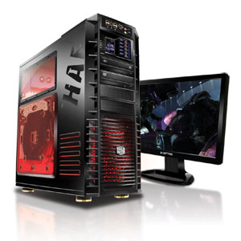
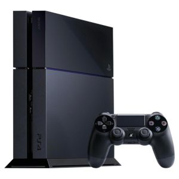
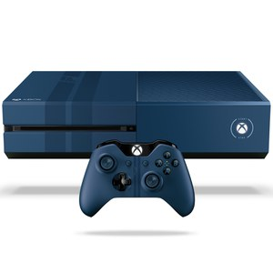
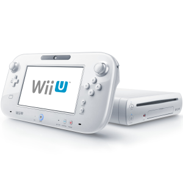
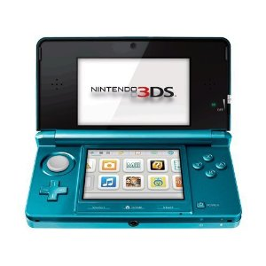
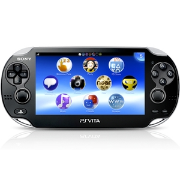

PC games, also known as computer games or personal computer games, are video games played on a personal computer rather than a dedicated video game console or arcade machine.
PS4

The PlayStation 4 (PS4) is a home video game console developed by Sony Interactive Entertainment, formerly Sony Computer Entertainment.
Xbox One

The Xbox One is a home video game console developed by Microsoft.It competes with Sony's PlayStation 4 and Nintendo's Wii U as part of the eighth generation of video game consoles.
Wii U

The Wii U is a home video game console developed by Nintendo.The Wii U is the first Nintendo console to support HD graphics. The system's primary controller is the Wii U GamePad, which features an embedded touchscreen, and combines directional buttons, analog sticks, and action buttons.
Nintendo 3DS

The Nintendo 3DS is a portable game console produced by Nintendo. It is capable of displaying stereoscopic 3D effects without the use of 3D glasses or additional accessories.
PS Vita

The PlayStation Vita (officially abbreviated PS Vita or Vita) is a handheld game console developed and released by Sony Interactive Entertainment. It is the successor to the PlayStation Portable as part of the PlayStation brand of gaming devices.